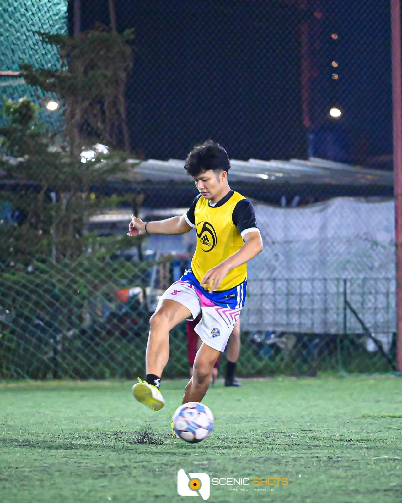
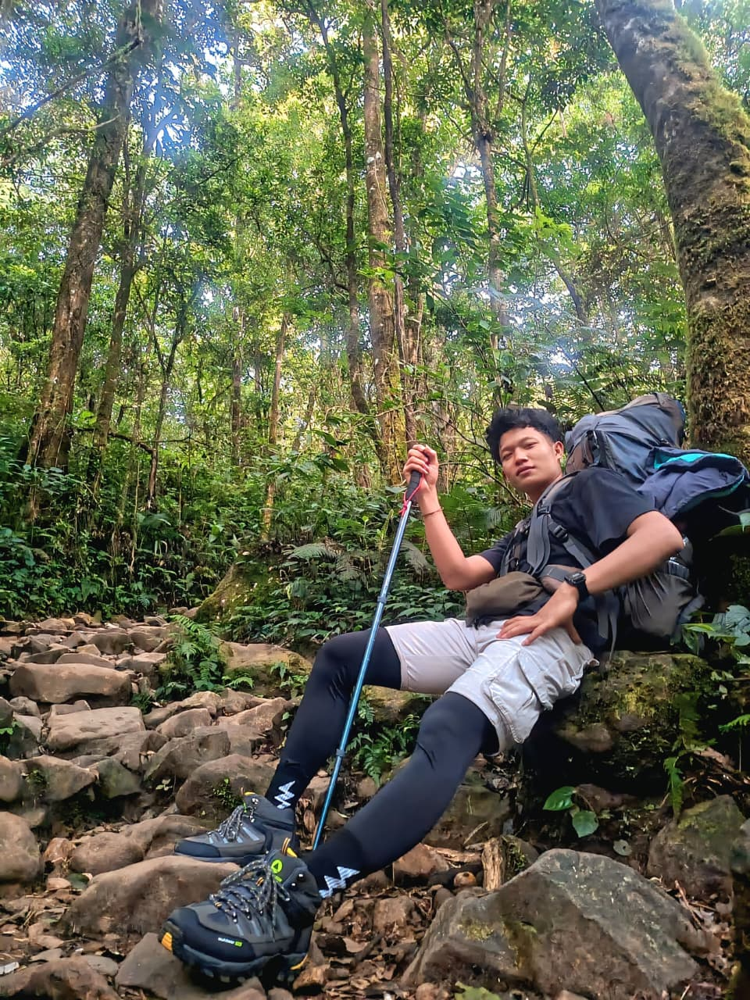
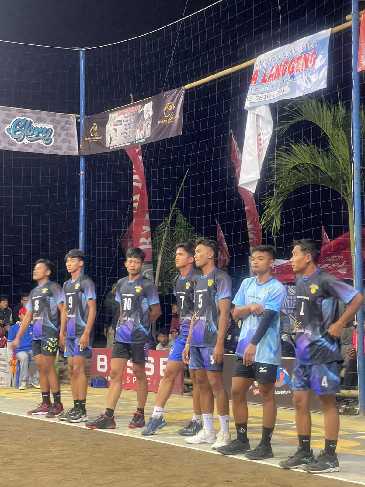

| Nama | : Deni Nur Abidin |
| Tempat, Tanggal Lahir | : Purworejo, 04 Desember 1999 |
| Jenis Kelamin | : Laki-laki |
| Agama | : Islam |
| Alamat | : Karangsari, Bener, Purworejo |
| Telepon | : 085875076807 |
| : abidindeninur@gmail.com |
Saya adalah Deni Nur Abidin, seorang teknisi jaringan yang berpengalaman dalam instalasi dan maintenance jaringan Fiber Optic. Saya memiliki kemampuan troubleshooting jaringan , instalasi dan konfigurasi berbagai macam perangkat internet dan telekomunikasi.
Saat ini saya sedang menempuh pendidikan di Universitas Siber Asia untuk meningkatkan kompetensi di bidang teknologi informasi dan pemrograman. Saya memiliki semangat belajar tinggi, disiplin, dan mampu bekerja dalam tim.
| No | Sekolah | Tahun |
|---|---|---|
| 1 | SMK TKM Teknik Purworejo | 2015 - 2018 |
| 2 | MTS Negeri 2 Purworejo | 2012 - 2015 |
| 3 | MIN Bener | 2005 - 2012 |
| Perusahaan | Posisi | Tahun |
|---|---|---|
| Telkom Akses | Instalasi dan maintenance jaringan internet | 2020-2023 |
| Bizmet | Engginer Acces | 2023-2024 |
| PT.Balitowerindo Sentra Tbk | Network Delivery | 2025- Sekarang |


